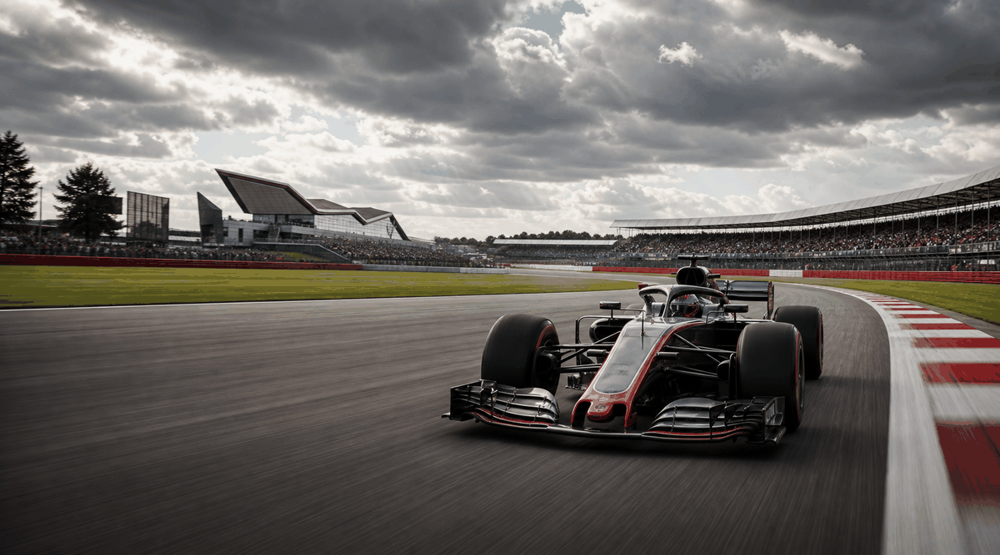

British GP 2026 · Saturday
Saturday: Sprint and Qualifying
Saturday decides sprint points first, then resets the tension for Grand Prix qualifying.
Date4 July 2026
Session 1Sprint
Session 2Qualifying
TrackSilverstone
What happens
| Session | Purpose | Result slot |
|---|---|---|
| Sprint | Short race for points and momentum. | TBC |
| Qualifying | Sets the starting grid for Sunday's Grand Prix. | TBC |